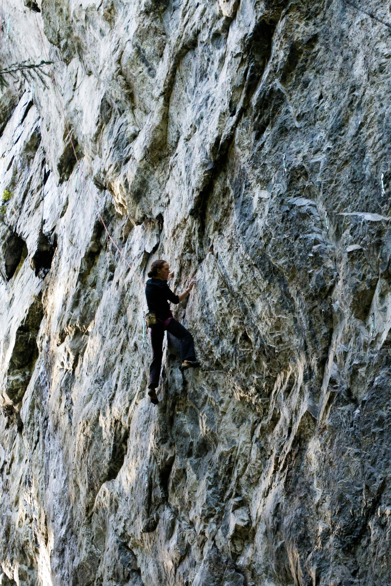
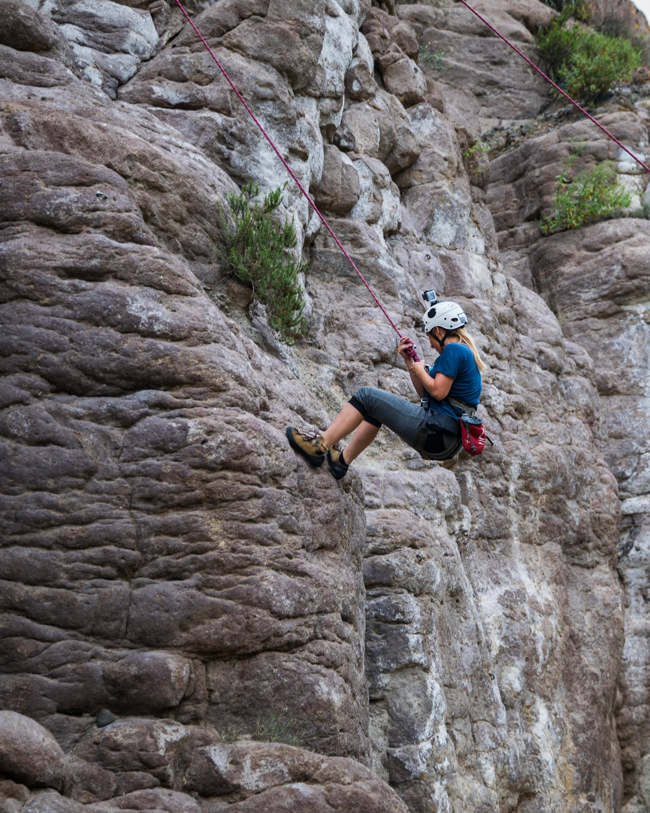

Most Popular Routes

Name: Jolly Rancher
Easy: 5.10
Description: a 130 ft (39m) long crack that starts small, then gets wider, before getting smaller again.

Name: Crack Attack
Medium: 5.11-
Description: a 95 ft (29m) long crack that starts wide and progressively gets smaller until the top.

Name: Way Rambo
hard: 5.12-
Description: a 100 ft (30m) long crack that is quite narrow and has two leftward traverses.